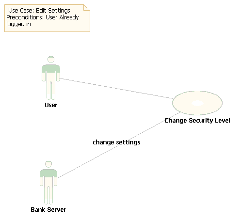

Internet Banking System
Use Case: Edit Settings

Fig-
4.1.6 Edit Settings Use Case.
Following are the specifications for this Use Case-
Actors:
· Customers, Entrepreneurs, Industrialists, Organizations, Administrators, etc.
Pre-Conditions
· User is already logged in.
Post-Conditions
· Changed settings are applied.
Basic Flow
· The user will be redirected to edit settings page.
· User will provide the desired information.
· The data will be sent to server.
· Settings will be changed on server.
· User will be informed